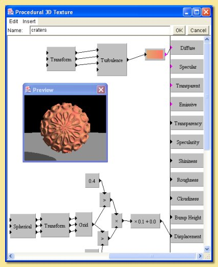
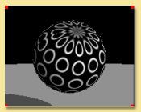

|  |
This texture is based around the grid module. With this pattern, the value at any point on the surface
is equal to the distance from that point to the nearest 'feature point' which are distributed on a grid.
The output from the grid module is fed into a greater than function which returns a 1 for any point
that is less than 0.4 (i.e. any point within 0.4 units of a feature point) and 0 everywhere else. The grid
output is also fed into another greater than function which returns a 1 if the value is greater than
0.3 and 0 everywhere else. The resulting values are multiplied together. Points that had values of 1 for
both the greater than functions are the only ones which return a 1, i.e. the overlapping regions
which are circular rings. The spherical transform is applied to give spherical symmetry and a linear
transformation (scaling 2 in all axes) applied to scale down the pattern. The image below illustrates
the result by feeding the output of the multiplication to the default custom colour map into diffuse
colour:  Instead of feeding this to the diffuse colour, however, it is used as the input to the displacement property (following a scaling) to give a raised 'sucker' effect. A simple colour function based on the turbulence pattern is plugged into the diffuse colour. |